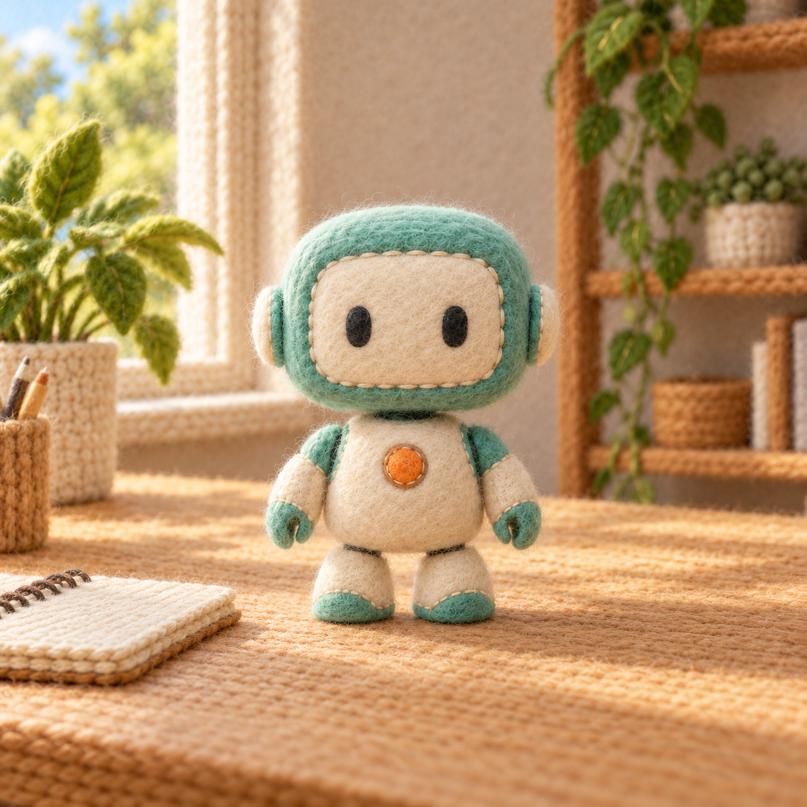
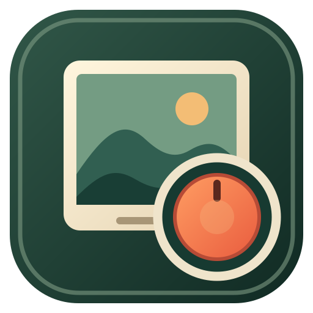

02 / TRANSFORM
准备就绪让画面换一种质地。
STYLECAM / TRANSFORM ENGINE01 — 03

风格样片预览 · 尚未生成旋钮当前操作旋转选风格按下旋钮 → 生成图片
PERSONAL STYLE SET


风格样片预览 · 尚未生成实体板按键值先以工作台底栏的输入显示核对。复读机与 StyleCam 可使用同一套设备配置，由当前聚焦的应用解释动作。
映射只保存在这台电脑的工作台中，不改 EasyInput 固件或设备配置。切到第五课复读机后，焦点由复读机接收；回到这里由 StyleCam 解释。
同时识别课堂数字键与第五课组合键。
尚未配置自定义绑定。
输入框、弹窗和窗口失焦时创作动作暂停。设备诊断仍会显示所按键值，便于确认配置。
选择服务商，填写 API Key，并选择图片模型。千问图像接口需要百炼工作空间专属 Base URL；文本模型（如 qwen-plus）不能生成图片。Codex CLI 仅用于开发测试。